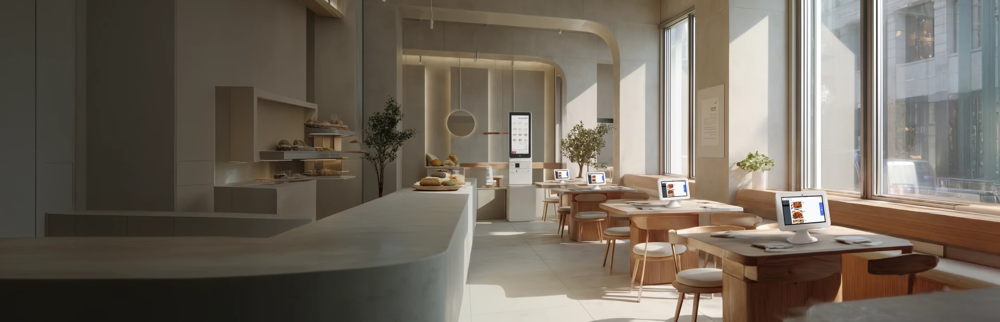

메뉴 관리
POS에서 변경한 메뉴·가격·품절 정보를 태블릿에 반영합니다.

매장·사업장 운영
주문을 받는 위치와 결제 시점에 맞춰 장비를 조합하고, 메뉴·품절 정보가 어떻게 연동되는지 확인합니다.
POS에서 변경한 메뉴·가격·품절 정보를 태블릿에 반영합니다.
테이블에 맞는 거치 방식과 지원 모델의 색상을 선택합니다.
연중무휴 장애 접수와 평일 기준 교체 지원 조건을 확인합니다.
| 장비 | 이용 위치 | 주요 역할 |
|---|---|---|
| 스마트오더 | 고객 테이블 | 고객 직접 주문·선택형 결제 |
| 스마트 POS | 카운터 | 주문·메뉴·매출 관리 |
| 결제 키오스크 | 입구·주문대 | 셀프 주문·결제 |
장비 모델·거치·결제 연동 및 A/S 적용 조건은 계약 시 확인합니다. 기존 POS와의 호환성은 별도로 검토해야 합니다.
테이블 수, 메뉴 수, 선불·후불 결제 방식과 기존 POS를 알려주세요. 기존 장비 호환과 결제 연동은 별도 확인합니다.
알고 있는 항목을 체크해 보세요.
아직 정하지 않은 내용은 상담하면서 확인할 수 있습니다.
0 / 4 항목 확인
연동 구성에서는 POS 변경 정보를 태블릿에 반영합니다.
공식 안내에 두 방식이 제시되어 있으며 매장 흐름과 지원 장비에 맞춰 선택합니다.
공식 정보 참고: ADT캡스 주문·결제관리 안내 · 확인일 2026.10.30
캡스 제휴 가입 상담센터 · 실제 제공 기능·설치·요금·보상 범위는 선택 상품과 현장 조건에 따라 확인합니다.